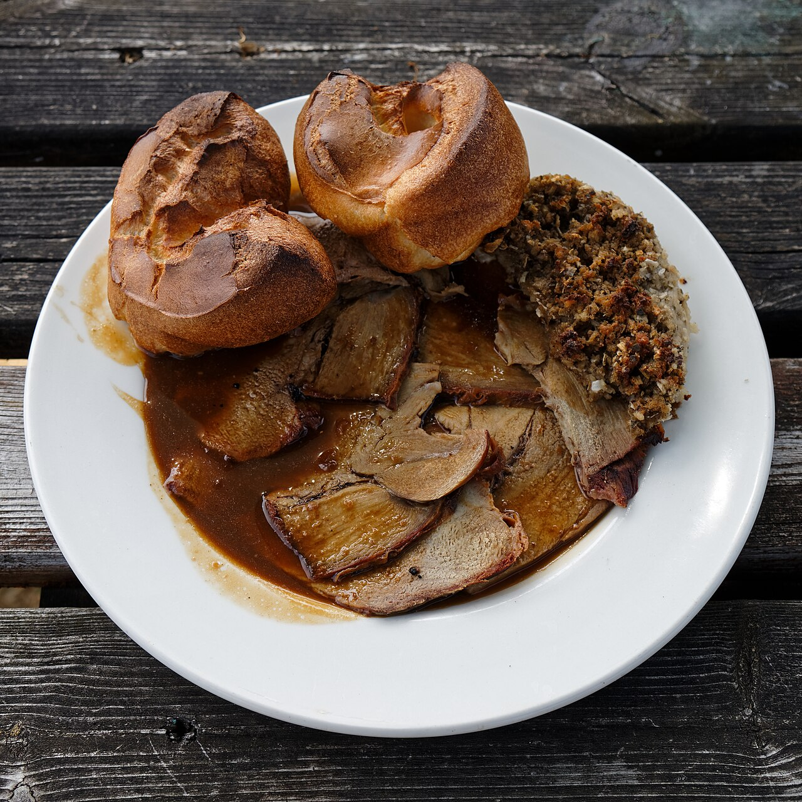

Plan of the original Lascaux cave ↗
The French Ministry of Culture’s cave plan identifies the Hall of the Bulls, Axial Gallery, Passageway, Nave, Apse, Chamber of the Felines and Shaft.
Deep dives / Europe & Mediterranean
Above the Vézère River in southwestern France, painters and engravers used a limestone cave to make images of horses, aurochs, stags and other animals. The chambers preserve a sequence of artistic choices. Bones and tools on the cave floor supply a different record of the people who went underground.
Upper Paleolithic art and visits to the original cave, with nearby archaeological sites and the history of discovery, conservation and replication. Ages in calibrated years before present use 1950 as the reference year.

Modern terrain in the Dordogne, from Montignac-Lascaux to Les Eyzies and the surrounding Vézère valley. Markers are approximate and include both the original cave and modern replicas.
About 21,500–21,000 cal BP (dated visits)
Upper Paleolithic cave on the hill above Montignac. Dates come from archaeological material associated with visits. The original cave closed to the public in 1963. [1] [2] [3]
45.05°, 1.17°Opened 1983 CE
Partial replica near the original cave, reproducing the Hall of the Bulls and Axial Gallery. [4] [3] [5]
45.05°, 1.17°Opened 2016 CE
The International Centre of Cave Art houses a more extensive reconstruction of the original decorated cave. [6] [3]
45.06°, 1.17°Paleolithic
Rock shelters near Saint-Léon-sur-Vézère are part of the inscribed valley property. [7] [1]
44.99°, 1.06°Upper Paleolithic
A rock shelter at Tursac gave its name to the Magdalenian archaeological tradition. [7] [1]
44.97°, 1.03°Upper Paleolithic
Marquay rock shelter with a high-relief frieze that includes horses. [7] [1]
44.95°, 1.10°Upper Paleolithic
One of the decorated caves near Les Eyzies within the World Heritage property. [7] [1]
44.94°, 1.04°Upper Paleolithic
Cave near Les Eyzies with painted and engraved animals, including a prominent group of bison. [8] [1]
44.94°, 1.03°Upper Paleolithic
Decorated cave west of the main river corridor, listed by UNESCO as Cro de Granville. [7] [1]
45.01°, 0.99°The protected landscape reaches well beyond the Lascaux hill. The World Heritage property groups 15 components, including caves, open rock shelters and sites known for deposits left by people. At Le Cap Blanc, sculpted animals project from a rock shelter wall. Paint and engraving at Font-de-Gaume show another combination of techniques. The valley brings these records into geographic proximity, even though people used its sites over many different periods. [7] [1] [8]
Lascaux’s entrance stands roughly 110 metres above the valley floor. Inside, the available passages branch through the limestone for a combined length of about 235 metres. The ministry’s cave plan follows the passage from the entrance through the broad Hall of the Bulls, then shows the branches and lower chamber where other groups of images survive. [9]
At the entrance end, the Hall of the Bulls opens into the Axial Gallery. Their pale calcite surfaces reflect light and give strong contrast to broad painted figures. Elsewhere the texture of the rock differs, and the Apse is densely engraved. The cave’s overall plan helps make sense of the shift in scale and technique from one surface to the next. [9] [10]
Where a painted contour crosses another, specialists can sometimes work out which figure was put down first. In the Hall of the Bulls, an early group of dark horses preceded the large aurochs, and some small stags were added later. Paint composition offers a second line of evidence for changes in technique. These observations establish a relative order for individual figures. The time between painting episodes remains uncertain. [11] [12]
People carried light into the inner cave. Archaeologists recovered lamps, including a shaped sandstone example from the Shaft. Finds of portable objects and stone tools open a second window onto activity underground, alongside the marks that survive on the walls. [13] [14]
Radiocarbon dates refer first to the material sampled. Researchers dated five reindeer remains from different sectors of Lascaux to around 21,500–21,000 calibrated years before present, near the transition between the Badegoulian and early Magdalenian archaeological traditions. The result is evidence for human visits that left material on the floor. A connection between these visits and particular paintings remains open. [2] [12]
Earlier measurements on reindeer antler suggested an older age for some material, and stylistic comparisons have supported different attributions. Calibration also changes the numbers readers encounter in older accounts. A laboratory age is expressed in radiocarbon years and must be calibrated to estimate elapsed calendar time. [15] [16]
| Evidence | Age or order | What it establishes | Sources |
|---|---|---|---|
| Late 1990s and early 2000s antler analyses | About 23,000–22,500 cal BP in the ministry’s calibrated summary | Older measurements from dated material informed an alternative chronology. | [15] [16] |
| Five reindeer remains in recent AMS study | About 21,500–21,000 cal BP | Evidence for human visits in the sampled sectors. | [2] |
| Superimposed figures and pigment analyses | Relative order within panels | The sequence in which selected images accumulated. Individual calendar dates remain unresolved. | [11] [12] |
Marcel Ravidat, Georges Agniel, Simon Coencas and Jacques Marsal entered the cave in September 1940. Public visits began in 1948. The first guides reported green algae in the late 1950s, and the state closed the original to the public in 1963. Conservation now treats the cave and its surroundings as a system whose environment requires continuing observation. [17] [18] [3]
Lascaux II opened in 1983 with copies of the two large painted spaces near the former visitor entrance. The International Centre of Cave Art opened Lascaux IV in 2016 as a much more extensive reproduction. The three locations sit close together. The wider valley map places them in their landscape, while the cave plan shows the arrangement of rooms underground. [3] [5] [9] [1]
| Date | Event | Sources |
|---|---|---|
| 1940 CE | Four teenagers enter the original cave near Montignac. | [17] |
| 1963 CE | Public access to the original cave ends. | [3] |
| 1979 CE | UNESCO inscribes the Vézère Valley prehistoric sites and decorated caves as a serial property. | [7] |
| 1983 and 2016 CE | Lascaux II opens and is later joined by Lascaux IV in Montignac. | [3] |
Open the source maps for their original detail, legends and dates. Their coverage and reproduction terms belong to the issuing institution.
The French Ministry of Culture’s cave plan identifies the Hall of the Bulls, Axial Gallery, Passageway, Nave, Apse, Chamber of the Felines and Shaft.
UNESCO’s component maps and coordinates place Lascaux among 15 sites. The 2023 documents show the approved property and buffer-zone changes.
Open this era on global Explore ↗ Open Europe & Mediterranean atlas ↗ Climate, sea level & ice-sheet context ↗
Sources checked and linked above; geological and historical dating methods follow the primary papers.